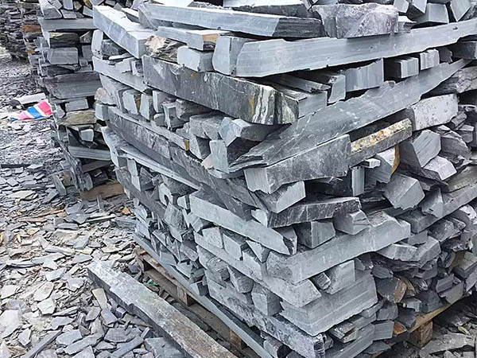
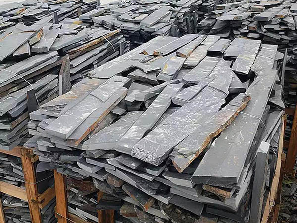

1、 了解公司背景（组织架构、发展历程、企业文化、等），尽快融入团队。
2、 了解公司的经营方针和导向（发展规划、经营取向和定位等），每个大区或事业部经营策略也不一定完全相同。
3、 熟悉产品（工艺流程、加工周期、工艺水平），做合适的产品。
4、 了解石材同行状况及加工水平，做万事通。
5、 了解矿山开采，熟悉石材品种（采购、加工、运输、安装），做石材专家。
6、 获取信息的渠道（朋友介绍、客户深度开发、关联行业、网络、黄页、报刊、杂志、电视、道听途说）

7、 了解石材行业的客户类型及特点（设计师、房地产、装饰商、同行，不同的报价处理方式）
8、 关注生产、库存，向客户推合适的品种。
9、 了解一些色彩搭配常识及设计基础
10、 报价方式与原则（重中之重，关注批量批次影响、货款影响、质保金及隐性加工内容如防污、包装、运输等）
11、 样板选送及宣传资料（考虑库存量、普通质量状况、后序采购质量、加工难易程度、关注标签、装订名片细节）
12、 客户接送与招待（车辆安排、食宿安排、陪同安排、路线安排等，小到宣传资料、手提袋、要看的材料位置等）
业务参观与社会参观的区别：业务参观要着重介绍生产车间加工先进的设备、加工质量、技术队伍、排版调色以及观摩加工好的成品质量；而社会参观只注重规模介绍和环球在建设工厂时已考虑环保项目，如污水处理、边角料加工成马赛克等。在每个环节提前设计好讲解要点或重点以及准备的相关资料等。

13、 沟通与谈判能力（必备的地域知识、行业状况、建材行业相关知名企业、国家政策等，与领导请示前、生产的交底、客我之间处理）
14、 招投标知识及相关资料
15、 合同签订与风险防范（财务、税金、合同方面的知识）
16、 外贸知识，如付款方式（信用证、现金）、船务知识、汇率影响、产地证、熏蒸、报关手册、报价模式（离岸价、到岸价）、规格尺寸转换、外国人的不同思维及处理方式、货柜大小、装柜要求等）
17、 营销服务专家（注意售前、售中、售报服务的不同与费用承担模式）
18、 市场调研精英（了解同行、客户群体、消费趋势、政策导向、出差报告内容与格式）